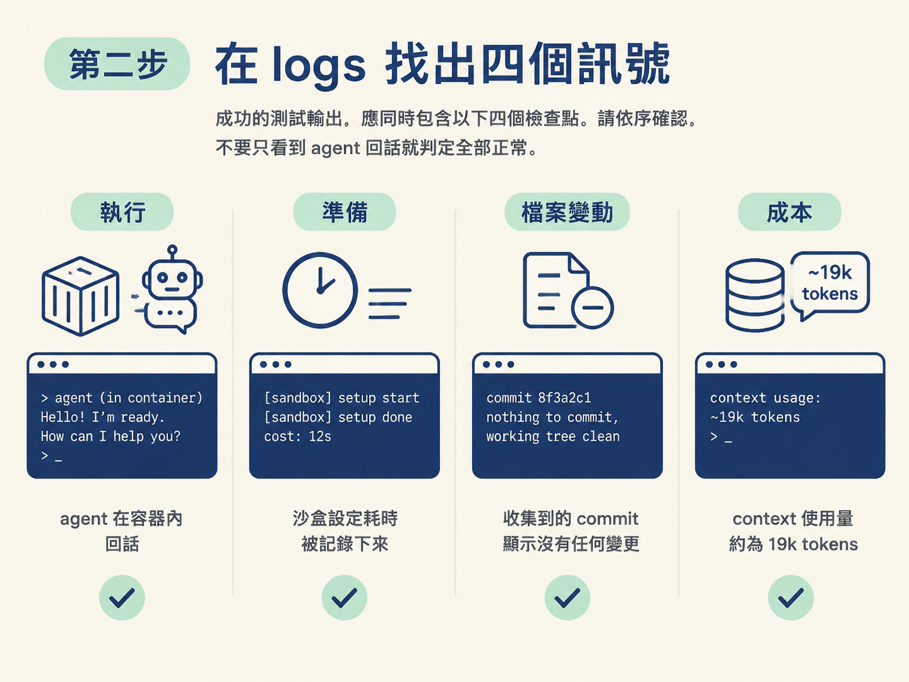
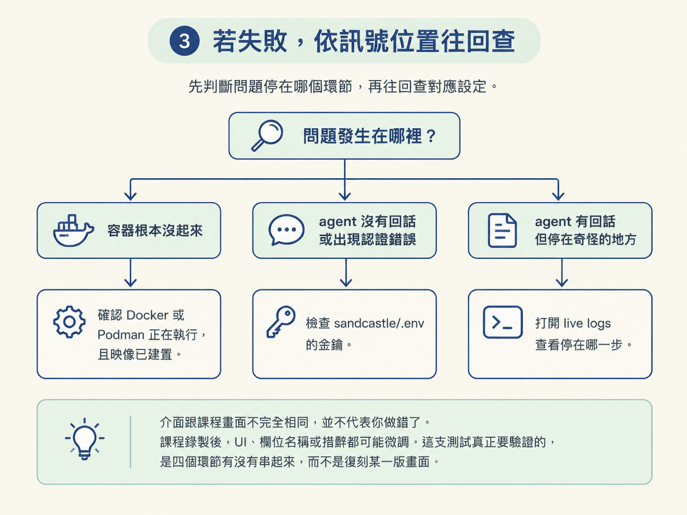

這一課要做的事很單純：執行 npx tsx sandcastle/test.ts，讓一個 agent 在容器裡完成一次最小對話，再從 logs 確認整條鏈路真的有跑通。
完成後，你應該能在輸出中找到四個訊號：
動手前先確認兩件事：
.env 裡已經填入有效的金鑰。這些條件都具備後，就可以開始驗證。沙盒「建好了」不代表「真的能用」；現在要像試車一樣，讓 agent 實際進去跑一圈。
在終端機執行：
npx tsx sandcastle/test.ts這行指令會啟動一個 AFK agent，並送出一句「hello how are you」。對話內容本身不重要，重要的是它能不能被啟動、能不能在容器裡執行，以及執行後留下哪些紀錄。
正常情況下，終端機會開始出現 log，接著印出一行帶有連結的 agent log。你可以在 macOS 使用 command-click，或使用 control-click 開啟連結，查看容器內正在發生什麼事的 live logs。
注意：不要只看指令有沒有報錯，也不要只看終端機最後是否回到提示字元。真正的驗證依據是 logs 裡有沒有出現預期訊號。agent 在容器內執行，部分錯誤可能不會直接顯示在終端機上。
一份成功的測試輸出，應該同時包含以下四個檢查點。請依序確認，不要只看到 agent 回話就判定全部正常。

logs 裡會看到 agent 啟動，並回覆一句大意是「hello, I'm doing well, thanks for asking. How can I help you today?」的話。
這表示容器已經跑起來，金鑰認證成功，prompt 也確實送到了 agent 手上。
logs 會顯示設定沙盒花了多少時間。這個紀錄也提醒你，每次執行都得重新準備沙盒，每一輪都要付這筆成本。
測試會嘗試收集容器內產生的 commit，結果應該是「none were made」。這次 agent 只是打招呼，沒有修改任何檔案，所以沒有 commit 才是正確結果。
logs 會回報這次執行大約消耗 19k tokens 的 context。這可以當成一個基準值，之後執行真正任務時，再拿來比較使用量。
你看到的輸出可能會因為介面或版本不同而有些差異，但大致會像這樣：
[agent] hello, I'm doing well, thanks for asking. How can I help you today?
[sandbox] setting up sandbox… (耗時 X 秒)
[commits] collected commits from sandbox: none
[context] ~19k tokens used判斷重點不是每個字都要一模一樣，而是四個訊號是否都出現：agent 有回話、沙盒設定耗時有紀錄、沒有 commit，以及 context 使用量約為 19k。
如果沒有看到完整結果，請先判斷問題停在哪一個環節，再回頭檢查對應設定。
sandcastle/.env 裡的金鑰是否填寫正確，並確認它是有效的 Anthropic API key。介面跟課程畫面不完全相同，並不代表你做錯了。課程錄製後，UI、欄位名稱或措辭都可能微調。這支測試真正要驗證的，是四個環節有沒有串起來，畫面像不像某一版倒是其次。

測試通過後，你手上就有一個走過基本驗證的執行環境，可以真的拿來用了，不只是個會回 hello 的玩具。
你已經確認以下事情都能運作：
這四件事，正是之後 AFK 迴圈每次迭代都會重複做的事。未來接上多輪迴圈或 issue 佇列後，如果某個環節壞掉，你就能先用這支最小測試判斷：問題是在沙盒，還是在其他流程。
完成驗證的標準，是 logs 中同時出現四個訊號：
驗證沙盒靠一支最小的測試：npx tsx sandcastle/test.ts 啟動 agent 並問一句 hello。成功的證據就在 logs 裡，共有四個訊號：agent 回話、沙盒設定耗時被記錄、沒有產生 commit、約 19k context 被使用。這四個訊號分別對應執行、準備、檔案變動與成本，把它們看成四個檢查點，你就能判斷沙盒是不是真的在運作。介面措辭可能不同，重點是四個訊號有沒有出現，畫面不必一模一樣。
走到這裡，你已經為自走流程備好一個安全的底座：agent 能在容器裡自由行動，卻碰不到容器外的世界。之後每一輪 AFK 執行都會在這個沙盒裡發生，而這支最小測試，就是你放手讓 agent 持續工作的基本檢查工具。